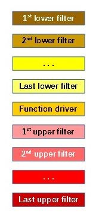

Automatic monitoring of newly loaded drivers is one of the killer features of the IRPMon project. In short, the IRPMon driver can be configured to watch for a certain driver and start monitoring it automatically justafter its appearance in the kernel is detected. The current implementation of this mechanism works for PnP drivers; drivers that are loaded as function drivers or filter drivers for a PnP device connected to the computer.
To monitor particular PnP driver, the user needs to know what class of devices (meaning the device setup class) the driver handles. Then, the user instructs IRPMon to watch for a driver with particular name that handles devices of that class. The IRPMon driver register itself as a filter for that class, so its AddDevice routine is invoked when a device belonging to that class apperas.
Figure 1 shows the order of AddDevice routines invoked when a new device is added to the system. When an AddDevice routine is called, it can observe the current state of the device stack being built. In other words, it can see the results of previous AddDevice calls for that stack (a typical action of an AddDevice routine is to create a device object and attach it to the stack).

Fiture 1: AddDevice invocation order
So, when the AddDevice routine of the IRPMon driver is invoked, the driver potentially see all drivers (and their devices) that contributed to the new device stack before itself. That means, the position of the IRPMon driver amongst the device setup class filters influences its detection capabilities. For that reason, the user may decide:
For each device setup class, the IRPMon driver can be registered once as its lower, once as its upper filter. Hence it is possible to register it as both types of filter for one class.
Currently, the IRPMon drivers registers itself as a filter for device classes by writting its service name to LowerFilters or UpperFIlters values in the class keys. Such an approach may be dangerous for the system (it even may lead to an unbootable machine) in case the changes are not reverted before system shutdown. Thus, the IRPMon driver registers for shutdown notifications and reverts the changes just before the registry are written back their storage on disk. However, if a system crash ocurrs, the driver has no chance of reverting the changes and the user must revert the changes made by the IRPMon driver manually.
In the future, the IRPMon driver will act as a registry filter driver, so there will be no need to write the filter registerations to the registry.